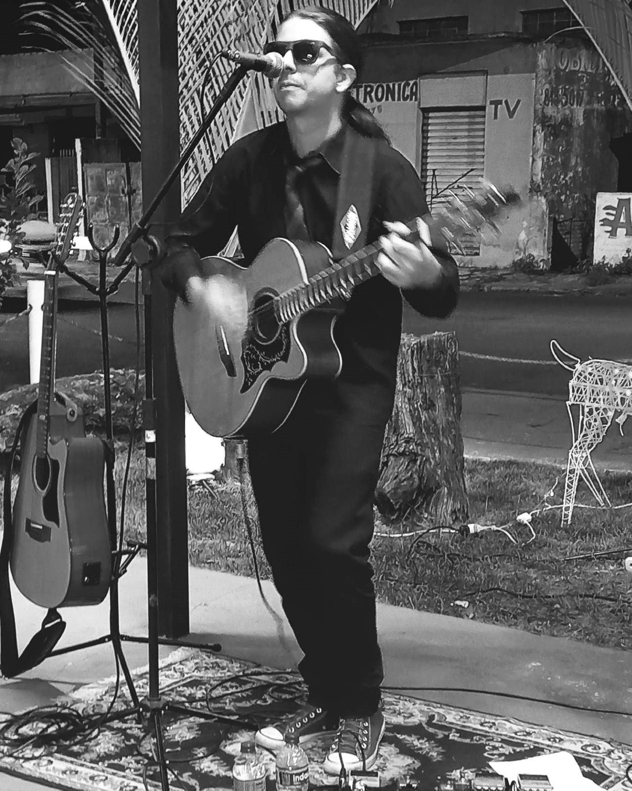

Thiago Zu Vocalista, guitarrista, compositor. De 2006 a 2015 membro fundador da banda "Virtuosos",uma
banda de rock que resgatou vários clássicos dentro do rock n roll ao Rock alternativo, atuando dentro de
Andradas MG e região.
Fez parte da banda "Forset" uma banda independente 100% som autoral, que ficou em atividade de 2015 a
2017. Atualmente em carreira solo iniciando se em 2017 até o presente momento.
Participou quatro vezes da tradicional festa do vinho da cidade de Andradas e fez shows por toda a
região do Sul de MG ao leste Paulista chegando a se apresentar por diversas vezes na cidade de São Paulo
Capital.
Fez abertura dos shows de nomes como Capital Inicial, Teodoro e Sampaio, Marcelo Gross "banda Cachorro
Grande" e o Guitarrista Americano Mike Orlando.

Hoje com esse novo projeto já lançou três singles com músicas autorais que estão disponiveis no Deezer,
Spotifay, Amazon music, Itunes e todas as outras plataformas digitais.
Thiago Zu segue fazendo shows com banda de apoio e acústicos pelos bares da cidade e região,tocando em
festas, festivais e eventos particulares, levando até o publico um set com vários clássicos do pop Rock
nacional junto as musicas autorais.